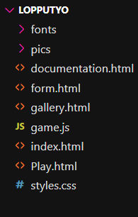
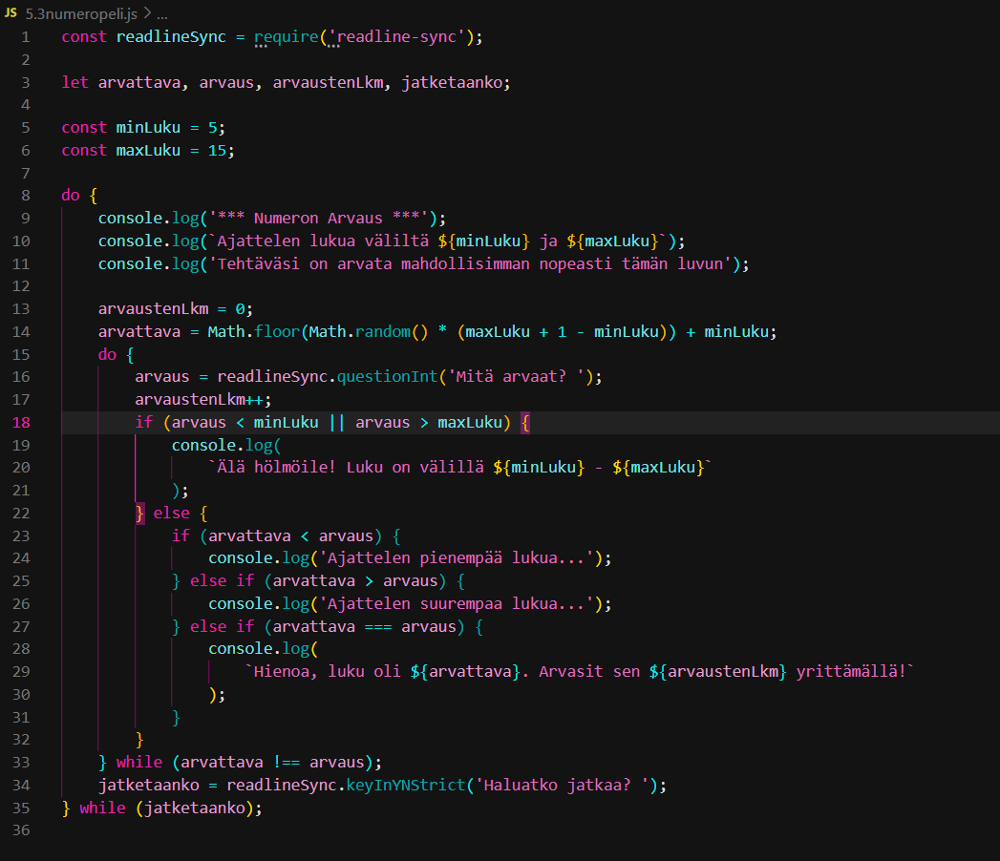

Starting out, I didn't plan anything specific, but instead
thought of going for a simple design for the front page,
that would fill assignment requirements, and started playing
with how that would look. I added some styles that I found
appealing, and once I was happy with the general look, I
started thinking about content.
At first, I thought I would make a CV, and then a blog, but
eventually, I came up with the idea to create space-themed
content, as my styles already had some dark colors and stars
in them, and I was able to tie in the game concept and form
nicely into the fantasy space cadet recruitment idea. I also
added more styles that synergized with my website concept.
I chose this over the other options because it gave me a
good excuse and freedom to experiment with javascript and
different implementations.
Validation: CSS is valid, and all HTML is valid aside from
the trailing slash infos.
Tested on: Firefox 131.0.3, Chrome 130.0.6723.70, and
Microsoft Edge 130.0.2849.56. Works as intended.
Tested on all devices in responsive dev-tools for basic
layout and functionality. Responsivity works well above
400px but will not break between 300-400px either. Under
300px is not supported at this time.
Below is my file structure, some of the file names are
slightly different than the final page titles, but still
clear enough. 5 HTMLs for 5 pages, one CSS file for all
stylings, one JS file for the game code. The fonts include
the one font used on all themed pages aside from this one,
and pictures are all visible across the website.
I elected not to use a framework in my project.

The HTML for each of my pages is rather simple, with the
exception of the game and the form, the rest is stuff we
learnt in class.
I made the structure of the form page using the guides on
W3schools, and in Tiko-support Topi and I tested and
troubleshooted the form submission functionality with
different solutions from stackoverflow and mdn. I added
javascript directly into the html this time, instead of
making a separate file.
Overall, there were no impossible problems, but some areas
took a good while to figure out. The hardest relevant
problems were to do with the CSS and mediaqueries.
Eventually as the page got long enough, it became more
challenging to keep track of what was affecting what, and
there may still be some repetition or overlapping elements
that I missed.
Issues with positioning were the most challenging by far.
Particularly with finding a navigation style that looked
decent on smaller screens. Using resources such as w3, mdn,
stackoverflow and ChatGPT helped a lot to solve many of the
issues, and TIKO support was the most invaluable resource.
The game and the form were very challenging for sure, but I
learnt a lot and had fun. I wanted to add more effects found
on codepen, for example, but they were too complex for me to
understand and implement correctly at this point.
The original code for the numbers game is made by me as an
assignment for our programming class.
Since we haven't exactly learned how to implement Javascript
into websites (and I made the game near the beginning of the
project, before learning functions in programming), I
elected to ask ChatGPT to transform my code into website
compatible code. This wasn't part of the assignment criteria
so I felt I could liberally use ChatGPT for the code and
functional structure of the game.
There were inevitably quite a few tweaks needed for the game
to function properly and as I intended. I fixed several
issues, particularly with faulty inputs, in TIKO-support
with the help of Topi.
I now understand the new Javascript code of the game, and I
can see that there's a function that does the same things my
original code did, with if statements checking for errors
and invalid inputs. Here is my original code:

There's a lot going on in my CSS file, and I tried to
organize it well. The file is divided into sections that
include the styling for each individual HTML page for
clarity. I also added notes in relevant locations to clarify
what element something affects, and generally in what ways.
I decided on the current structure to improve readability,
with all the specific stylings for each page separated.
General styles determines how the main index.html looks, as
well as other styles throughout the webpage that don't need
specific targetting: overall styling for the body, content
containers, navigation, and footer, which generally remains
the same throughout the separate pages. The @keyframes
animation is generated by ChatGPT.
Also contained are the flipcard styles for the front page,
and specific details such as how the images behave within
the paragraph element.
Next up are the styles required for the game to function and
look the way I want it to. The stylings for the game are
made by me, which include positioning, colors, borders,
fonts, button styles, etc.
Gallery styles just has the flipcards slightly modified in
sizing and location in order to fit into the container.
Documentation styles includes an additional content
container, and a modified structure for the main content
area, I utilized grid here with stretch to organize the
boxes. The rest of the pages use flex.
This was challenging and it took a long time to find the
correct solution for the boxes within the content container
to line up as they do.
Form styles mostly includes font colors for each element in
the form, as well as styling for the submission button, and
some positioning.
Lastly are the mediaqueries for several different widths. I
chose custom viewport widths which aligned with the
fucntionality and breakpoints of my website. There are many
more than required, but this ensures that the website worked
and looked decent on all devices.
Thanks for viewing!
Through this project, I feel like I internalized everything
we learnt in class and put most of it into practice, and
learned a whole lot more. Best of all, I had an absolute
blast completing this!
Turning it in was the hardest part, I felt like I needed to
continued perfecting everything. Admittedly I spent way more
time on this than the proposed assignment hours.
Here are the sources and links to all the code snipets and images used in my work. I did not include individual links to each minor google or AI solution that I modified to suit my work.